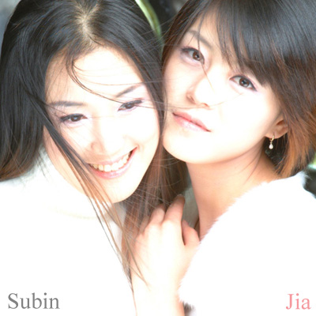
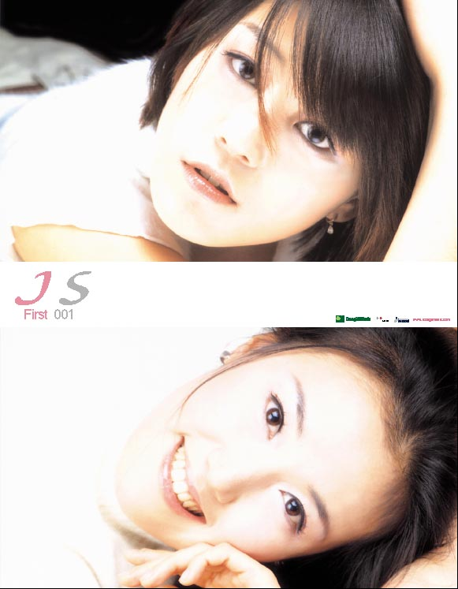
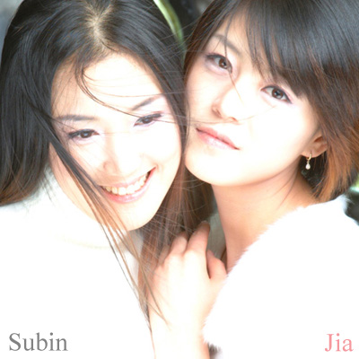
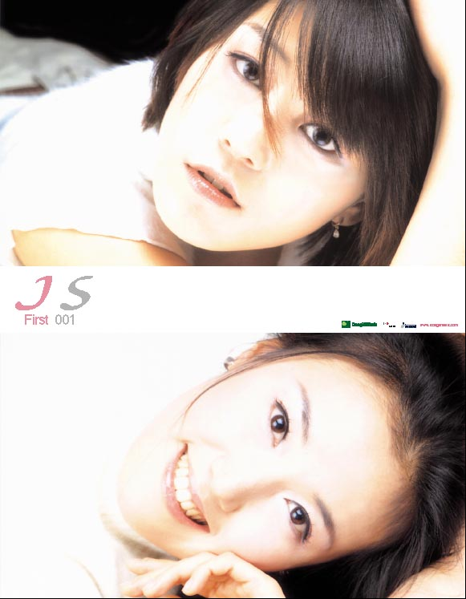

요즘, 지겹게 반복 듣기 하고 있는 노래..
후배 싸이에서 우연히 듣고는 계속 듣고 있다.
노래 부른 그룹은 JS(제이에스- Jia, Subin 이란다..)
원래는 "5월" 이라는 그룹이 불렀던 것을 리메이크 한 것이라고 한다.
노래를 함 듣고 싶다면... -> http://blog.naver.com/calgaryms/80015504112


후배 싸이에서 우연히 듣고는 계속 듣고 있다.
노래 부른 그룹은 JS(제이에스- Jia, Subin 이란다..)
원래는 "5월" 이라는 그룹이 불렀던 것을 리메이크 한 것이라고 한다.
노래를 함 듣고 싶다면... -> http://blog.naver.com/calgaryms/80015504112
종로에서 - JS
그렇게 떠나야만 했던 시간속에서
너를 보내기는 정말 싫었어
돌아서는 너의 슬픈 미소속에
사무친 그리움을 나는 알았어
회기로 향하던 쓸쓸한 플랫폼에서
서성이던 모습 보이지 않고
허전한 빈 공간 속을 걷고 있는
너의 모습 생각해 봤어
오고 가는 많은 사람들 속에서
너는 무얼 생각하고 있을까
두 눈에 이슬 가득 담고 슬픈 미소 지으며
무얼 그리워 하고 있을까
내가 곁에 있어도 그립다고 말하던 그대여
힘겹던 네 모습이 나를 울리네
내가 곁에 있어도 그립다고 말하던 그대에게
내일은 사랑한다 말해 줄꺼야
오고 가는 많은 사람들 속에서
너는 무얼 생각하고 있을까
두 눈에 이슬 가득 담고 슬픈 미소 지으며
무얼 그리워 하고 있을까
내가 곁에 있어도 그립다고 말하던 그대여
힘겹던 네 모습이 나를 울리네
내가 곁에 있어도 그립다고 말하던 그대에게
내일은 사랑한다 말해 줄꺼야
내가 곁에 있어도 그립다고 말하던 그대에게
내일은 사랑한다 말해 줄꺼야

